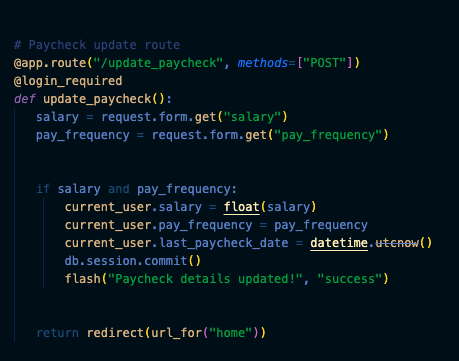

Project Progress
Latest -> Oldest
- Unfortunately, I was unable to make the chats be saved with the users account. Some iterations were able to store but not recall the data, the code to save is seen below but as of right now it doesn't work.
- 
- Restructured as a website, added basic frontend.